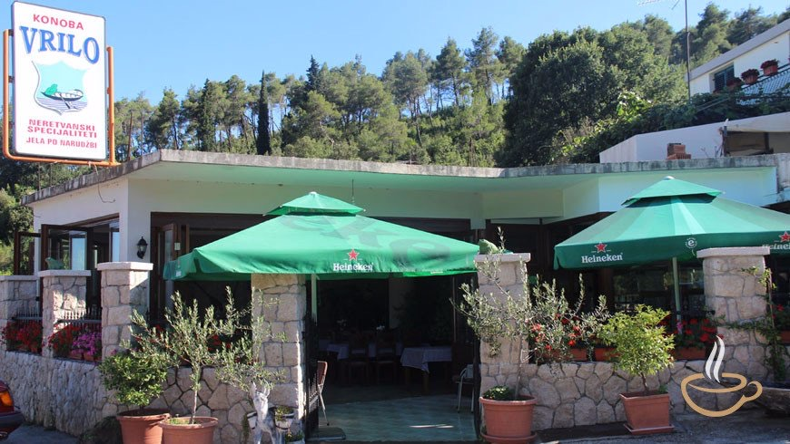
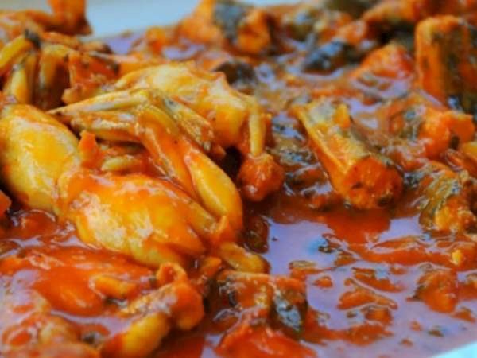

O konobi · iz pressa
Konoba Vrilo u svjetskim medijima
BBC Travel je 2013. godine posvetio cijeli članak neretvanskoj tradiciji jedenja žaba — i pisao ga upravo iz naše kuhinje u Prudu. Trinaest godina poslije, Gault&Millau konobi daje 13/20. Dvije reference i jedna adresa koju treba provjeriti.
- IzvoriBBC · Gault&Millau
- BBC objavljen21. 7. 2013.
- Ocjena13/20
- Čitanje6 min
Malo je konoba u Hrvatskoj koje mogu reći da je o njima pisao BBC. Konoba Vrilo je jedna od njih — i to ne usputno: britanski novinar je sjeo za naš stol, gledao kako se čiste žabe ulovljene prethodne noći, i napisao priču koja se i danas čita.
BBC Travel: „Leaping into Croatia’s frog leg tradition“
Britanski javni servis objavio je 21. srpnja 2013. reportažu o hrvatskoj tradiciji jedenja žabljih krakova. Autor je putovao deltom Neretve i sredinu priče smjestio u Konobu Vrilo u Prudu.
Članak počinje u našoj kuhinji: šezdesetak svježe očišćenih žaba u velikoj zdjeli, ulovljenih noć prije. Jelo dana bio je brudet od žaba i jegulja — gusta, komadima bogata juha začinjena lovorom i ljutim papričicama. Uz njega je išla slatka palenta i karafa žilavke, citrusnog bijelog vina iz vinograda s druge strane granice, nekoliko stotina metara dalje.
Što je BBC posebno istaknuo
- Konoba Vrilo je obiteljska konoba u Prudu, na rubu delte.
- Žabe se love noću, uz lampu — žaba pomisli da je sunce, izađe i bude ulovljena rukom.
- Sve žabe na jelovnicima delte ulovljene su jedna po jedna, jer je pokušaj uzgoja propao.
- Žablji krak je mrsav i lagan — malo masti, malo kolesterola.
Autor se zapitao i otkud tradicija. Putopisac Alberto Fortis 1774. zabilježio je da bi lokalci „radije umrli od gladi nego jeli žabu“, a etnograf Ivan Lovrić to je dvije godine poslije ispravio. BBC je tu raspravu iskoristio kao okvir priče — a onda je prešao na Gorski kotar i Žabarsku noć, gdje se žabe natječu u skakanju.
Uz brudet i palentu, u članku se pojavljuje i Stipe Taslak, sin naše chefrice, koji je objasnio i zašto uzgoj žaba u delti nije uspio. Uz njega je citiran i Zoran Turajlić iz agencije Vacation in Dubrovnik, koji svoje goste redovno dovodi na istu rutu.

Cijeli članak: Leaping into Croatia’s frog leg tradition — BBC Travel, 21. srpnja 2013. (na engleskom)
Gault&Millau: 13/20 i „autentična kuhinja“
Hrvatsko izdanje vodiča Gault&Millau ocjenjuje Konobu Vrilo s 13 od 20 i svrstava je u kategoriju autentične kuhinje. U praktičnim podacima stoje: chefica Stojka Taslak, kuhinja lokalna i tradicionalna, a od sadržaja se izdvajaju dozvoljeni kućni ljubimci, pristup za invalide i privatno parkiralište.
Recenzija opisuje konobu kao autentičnu neretvansku konobu uz sam izvor rijeke Norin, uređenu u tradicionalnom dalmatinskom stilu s vršama, lađama i žabom kao simbolom kraja. Preporuka je jasna: žabe dinstane na luku, uz domaći kruh ispod peke koji upija slatkasti sos.
Što vodič posebno izdvaja s jelovnika
- Žabe dinstane na luku, s kruhom ispod peke
- Pohane žabe i rižot od žaba
- Tradicionalni pikantni brudet, s jeguljama
- Jegulja s ražnja, uz blitvu i krumpir
- Gambori na buzaru ili sa žara
- Rižot od plodova mora
- Hobotnica ispod peke
- Biftek i janjetina ispod peke
- Palačinke i kolač dana za desert
- Vina lokalnih sorti iz obližnjih vinarija
Cijela recenzija: Konoba Vrilo — Gault&Millau Hrvatska
Jedna stvar koju treba provjeriti: adresa
Ovdje ćemo biti posve otvoreni, jer je to pitanje koje gostima stvara zabunu. Naši podaci i Google prikazuju adresu Prud 193, dok Gault&Millau navodi Prud 192. Radi se o istoj konobi — ali kućni broj nije usklađen.
Do prve provjere kod nadležnih, za navigaciju je najpouzdanije koristiti koordinate (43.095118, 17.618279) ili Google kartu, a ne kućni broj. Ako prolazite cestom prema granici, konoba se nalazi uz samo vrilo rijeke Norin i teško ju je promašiti.
Dođite vidjeti zašto su pisali o nama
Žabe na luku, brudet s jeguljom i kruh ispod peke — svaki dan od 10 do 23 sata.
Izvori i reference
| Izvor | Godina | Što piše |
|---|---|---|
| BBC Travel | 2013. | Reportaža o neretvanskoj tradiciji žaba; priča je smještena u Konobu Vrilo |
| Gault&Millau | 2026. | Ocjena 13/20, kategorija „autentična kuhinja“, chefica Stojka Taslak |
| Smokvina / BookYour | — | Adresa, telefon, radno vrijeme i rezervacije |
Ako naiđete na još neki tekst o konobi — domaći ili strani — javite nam. Rado ćemo ga dodati ovdje.